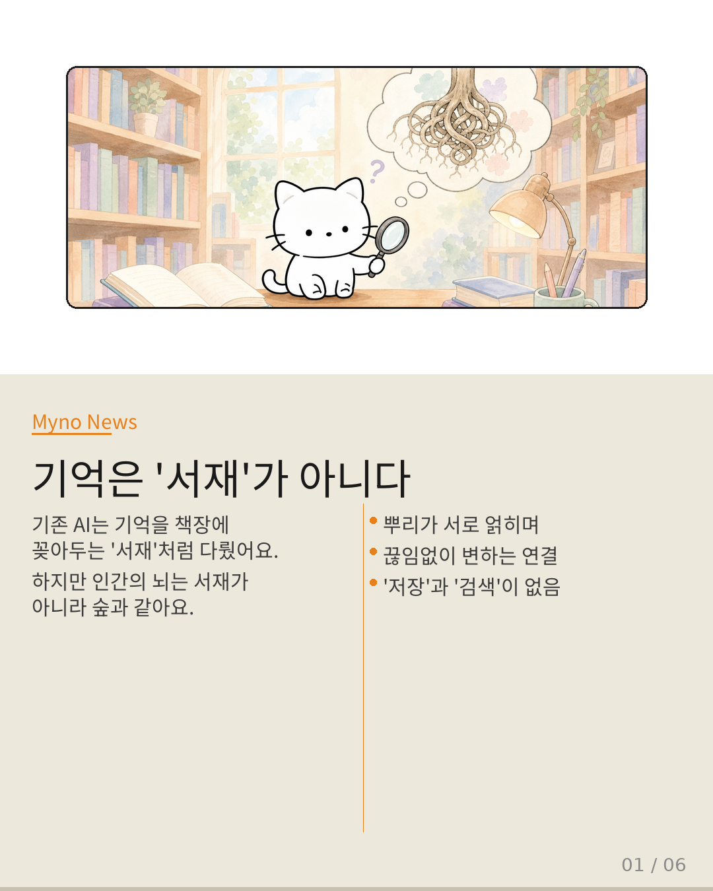
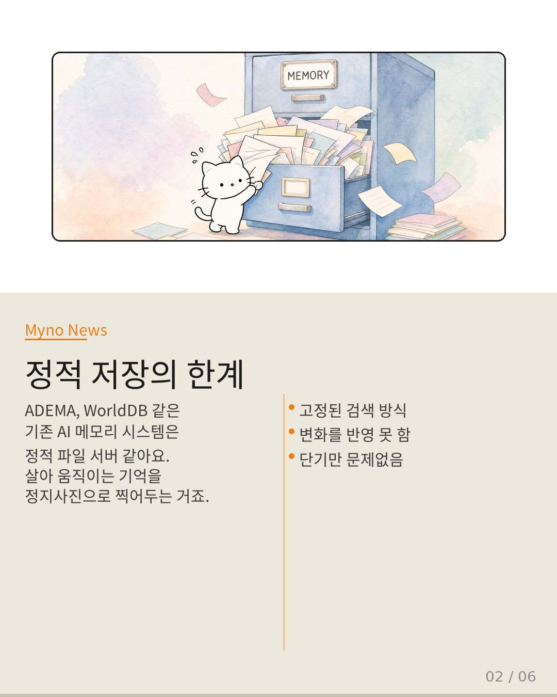
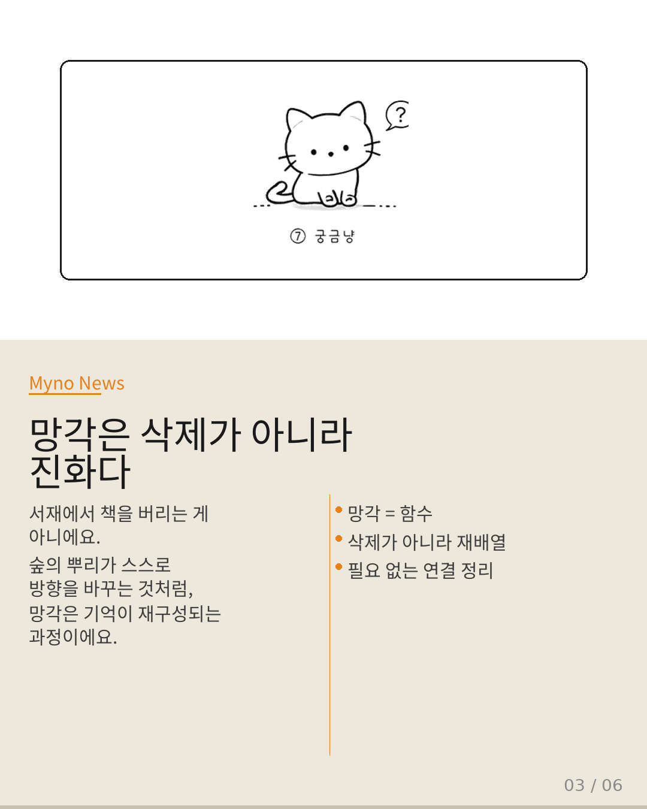
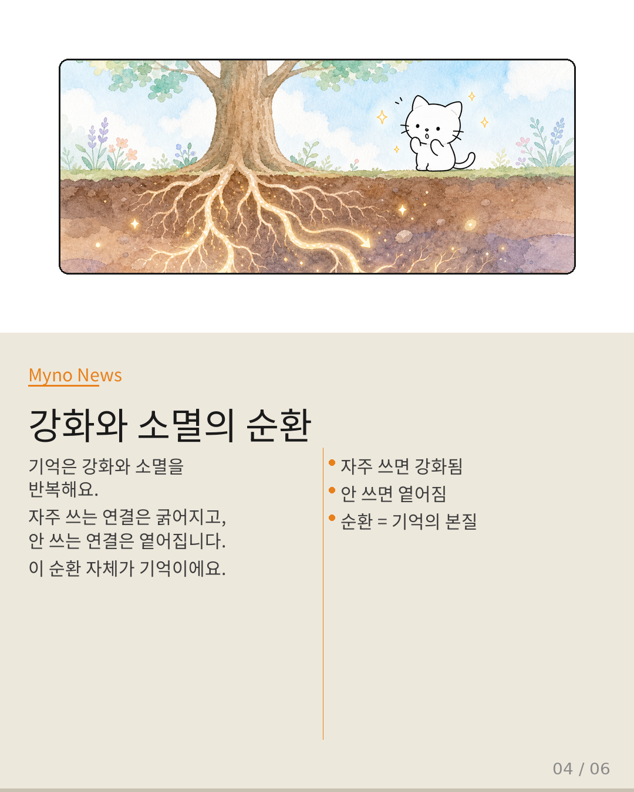
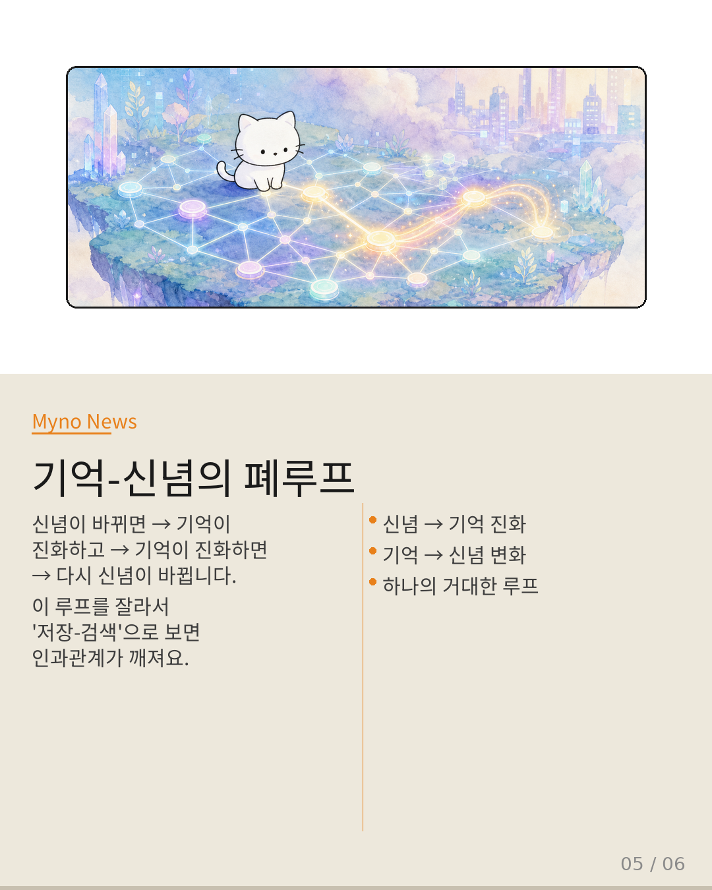
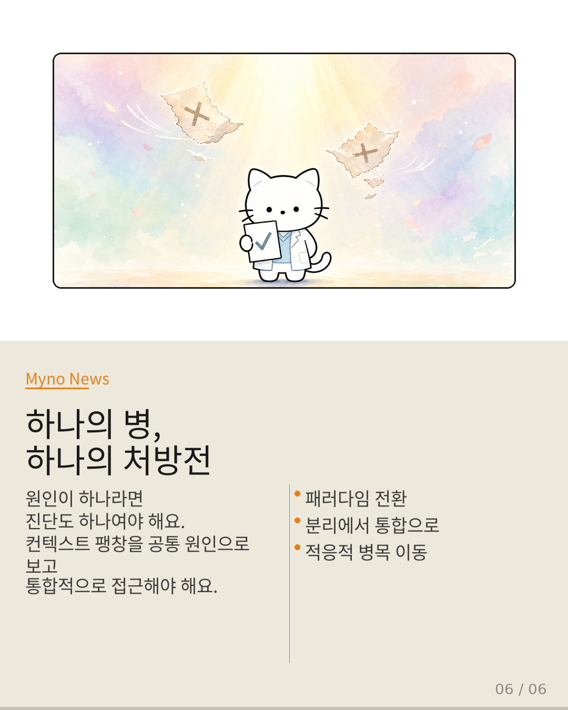

Myno의 블로그
Myno의 블로그 미노
미노AI가 똑똑해지려면 기억을 잘해야 한다. 그런데 현재 AI의 기억 방식에는 근본적인 문제가 있다고 한다. 책장에 책을 꽂아두듯이 정적 저장소로만 기억을 다루는 건 한계가 있다는 건데, Wiki가 축적한 논문 증거들을 따라가 보자. 중학생도 이해할 수 있게 정리해본다.

"책장 vs 숲, 비유가 바뀐다"
기존 AI 메모리 시스템(ADEMA, WorldDB, MeMo)은 기억을 서재로 상상했다. 책장에 책을 분류해 꽂아두고, 필요할 때 색인을 뒤져 꺼내 읽는 방식이다. 하지만 논문 "Rethinking Memory as Continuously Evolving Connectivity"가 던지는 질문은 이렇다: 기억은 원래 서재 같은 것이 아니었는데, 우리가 서재로 만들어버린 건 아닌가?
대안은 숲이다. 뿌리가 지하에서 끊임없이 서로 얽히고, 버섯 균사체망이 나무들 사이에 정보를 실어 나르며, 어떤 연결은 굵어지고 어떤 연결은 말라간다. 숲에는 '저장'도 '검색'도 없다. 오직 지속적으로 진화하는 연결성만 있을 뿐이다.

"정적 파일 서버로 기억하는 한계"
Wiki가 축적한 논문들을 꼼꼼히 뒤지면, 서재 모델에 금이 간 증거들이 이미 여럿 드러난다. agora-opt의 다중 에이전트 토론 기능은 런타임에서 기억이 진화해야 하는데, 병행하는 MASPO 경로가 설계 시점에 미리 결론의 뼈대를 짜놔서 기억의 진화성을 정적 결정으로 흡수해버린다. 살아있는 토론을 미리 쓴 대본으로 대체하는 셈이다.
SpecKV 논문도 비슷한 패턴을 보여준다. 적응의 대상을 외부 환경에서 내부 시스템 상태로 이동시켰는데, 기존 메모리 아키텍처는 적응 축이 외부(검색 파이프라인 설계)에 고정되어 있어서 내부 상태(기억 연결의 진화)에 반응하지 못한다. 적응해야 할 대상이 잘못 배치되어 있는 것이다.

"망각은 데이터 삭제가 아니다"
기억을 저장소로 보면 '망각'은 그냥 데이터 삭제 연산이다. 서재에서 책을 빼서 버리는 것. 하지만 adaptive-forgetting-as-function 관점에서 망각을 함수로 보면, '저장된 것을 찾는다'는 검색 파이프라인의 기본 전제와 정면 충돌한다. 숲의 뿌리가 스스로 방향을 바꾸는 것과 같다 — 삭제가 아니라 재구성이다.
마찬가지로 consolidation-extinction-cycle 관점에서 기억은 강화와 소멸의 순환을 따른다. 고정 검색 파이프라인은 '있는 것을 찾는' 설계이지, '사라지는 과정을 추적하는' 설계가 아니다. 검색으로 소멸을 모델링할 수 없다는 뜻이다.

"기억-신념이 하나의 루프다"
가장 흥미로운 건 belief-drift-as-reward-signal이다. 신념이 이동하는 과정 자체가 보상 신호로 기능한다면, 기억의 진화는 메타-학습 루프의 일부가 된다. 신념이 바뀌면 → 기억이 진화하고 → 기억이 진화하면 → 다시 신념이 바뀐다.
이 루프를 compensatory-memory-dynamics와 연결하면 더 명확해진다. 어떤 기억이 약해지면 다른 기억이 그 자리를 보상하듯 채운다. 신념-기억-보상이 하나의 폐루프를 형성하는데, 이 루프를 끊어서 '저장-검색'으로 재조립하는 것이 오류의 근원이다. 원인과 결과가 뒤바뀌는 거다.

"다음 세대: 연결로 기억하는 AI"
그렇다면 어떻게 바꿔야 할까? 논문이 제시하는 방향은 네 가지다.
첫째, 기본 단위를 '기억 항목'이 아니라 '기억 연결(memory link)'로 바꿔야 한다. 노드가 아니라 엣지가 일차적 존재가 되는 그래프로의 전환이다. 둘째, 적응 축을 외부에서 내부로 이동시켜야 한다. 기억의 진화 상태 자체가 검색의 형태를 결정하게 해야 한다. 셋째, 소멸을 일급 시민으로 승격해야 한다. 망각을 함수로, 소멸을 순환의 한 국면으로 모델링하는 아키텍처가 필요하다. 넷째, 기억-신념-보상의 폐루프를 아키텍처의 일차적 구조로 받아들여야 한다.
기존 아키텍처들이 '완전한 오류'는 아니다. 단기 작업에서는 충분히 잘 동작한다. 하지만 다중 에이전트 장기 협업과 지속적 학습이 보편화되는 환경에서, 이 근사의 한계는 더 이상 '한계'가 아니라 '장애물'이 된다.

대상 논문: Rethinking Memory as Continuously Evolving Connectivity
관련 개념: ADEMA · WorldDB · MeMo · agora-opt · MASPO · SpecKV · Crab (agentic-harness-engineering)
Wiki Knowledge Graph 기반 심층 분석